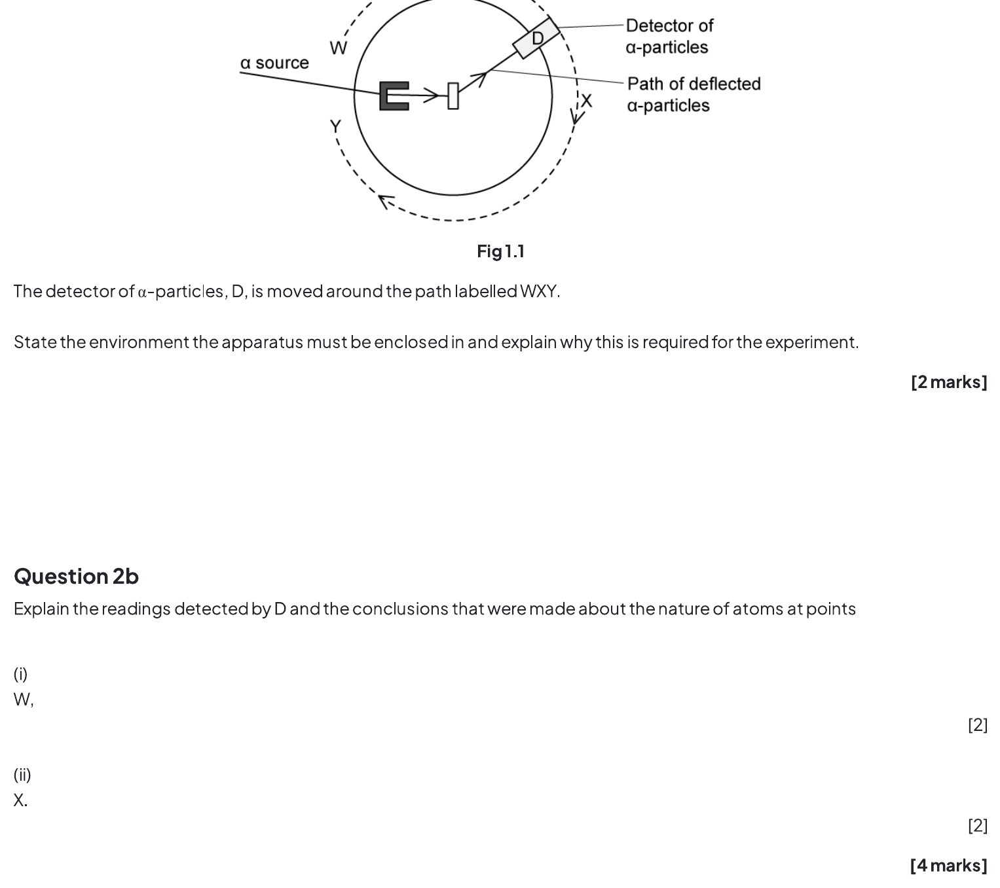

11.1 Atoms, Nuclei & Radiation - Medium
Example 1 · 11.1 SQ Medium Q1
A nucleus X decays by emitting a β⁺ particle to form a new nucleus, \({}^{23}_{11}\text{Na}\).
- State the number of protons and the number of neutrons in nucleus X.
Show answer and explanation
- (a) Mass number of X = 23 + 0 = 23. Number of protons = 11 + 1 = 12 protons
[1] - Number of neutrons = 23 − 12 = 11 neutrons
[1]
Example 2 · 11.1 SQ Medium Q2
The diagram shows the Geiger–Marsden (gold foil) experiment, where α-particles are directed at a thin gold foil and detected by detector D at various positions.

State the environment the apparatus must be enclosed in and explain why this is required for the experiment.
Explain the readings detected by D and the conclusions that were made about the nature of atoms at points:
W
X
State what the readings detected by D at position Y conclude about the charge of the nucleus. Explain why.
Calculate the number of α-particles per second passing a point in the beam if the current is 3.5 pA.
Show answer and explanation
(a) The apparatus must be enclosed in a vacuum
[1]because α-particles travel / are absorbed by a short distance in air[1]Total: 2 marks(b)(i) A very small proportion deviated in the backwards direction / at large angles
[1]. This shows that the mass and charge are concentrated in a (very small) nucleus[1]Subtotal: 2 marks(b)(ii) The majority went straight through
[1]. This shows that most of the atom is empty space / the nucleus is very small compared with the atom[1]Subtotal: 2 marks(c) The charge of the nucleus is positive
[1]. Because the α-particle is positive AND it is repelled / deflected (at an angle)[1]Total: 2 marks(d) Using \(I = Q/t\): \(I = 3.5 \times 10^{-12}\) A
[1]. An α-particle has charge \(2e = 2 \times 1.60 \times 10^{-19}\) C. Number per second \(n/t = I/(2e) = (3.5 \times 10^{-12})/(3.2 \times 10^{-19}) = 1.1 \times 10^6\) s\(^{-1}\)[1]Total: 3 marks
Example 3 · 11.1 SQ Medium Q3
The nuclear equation for the fission of a plutonium-239 nucleus is:
\[{}^{239}_{94}\text{Pu} + a\,{}^{b}_{0}\text{n} \rightarrow {}^{x}_{54}\text{Xe} + {}^{103}_{y}\text{Zr} + 3\,{}^{a}_{b}\text{n}\]
Determine the values of a, b, x and y.
State three quantities that are conserved in the fission reaction.
Calculate the radius of a plutonium-239 nucleus, given that the mean density of nuclear matter is \(1.3 \times 10^{17}\) kg m\(^{-3}\).
Aside from their structure, distinguish between an α-particle and a β-particle.
Show answer and explanation
(a) a = 1 AND b = 0
[1]. Calculating x: 239 + 1 = x + 103 + (3 × 1), so x = 240 − 106 = 134[1]. Calculating y: 94 + 0 = 54 + y + (3 × 0), so y = 94 − 54 = 40[1]Total: 3 marks(b) Three quantities conserved: mass and energy / mass–energy
[1]; momentum[1]; charge[1]Total: 2 marks (any two)(c) Mass of nucleus = 239 × 1 u = 239 × (1.66 × 10\(^{-27}\)) = 3.9674 × 10\(^{-25}\) kg
[1]. Using \(\rho = m/V = m/(\frac{4}{3}\pi r^3)\): \(r = \sqrt[3]{\frac{3m}{4\pi\rho}} = \sqrt[3]{\frac{3 \times 3.9674 \times 10^{-25}}{4\pi \times 1.3 \times 10^{17}}}\)[1]= 9.0 × 10\(^{-15}\) m[1]Total: 3 marks(d) Any three from: speed of α < speed of β
[1]; α has discrete energies while β has continuous spectrum[1]; α has greater ionising power than β (or β has shorter range)[1]; α is positive while β is negative[1]Total: 3 marks
11.2 Fundamental Particles - Medium
Example 4 · 11.2 SQ Medium Q1
Carbon-10 (\({}^{10}_{6}\text{C}\)) is an isotope that decays to boron (symbol B) by the emission of a β⁺ particle.
- Complete the nuclear equation for this decay, including the proton and nucleon numbers of all the particles involved.
- During the decay, a quark in the carbon-10 nucleus changes into a different type. State the change of quark that occurs.
State the two leptons in this decay.
State and explain why a hadron with a charge of −3e cannot exist.
State a possible quark combination for a hadron of charge +2e.
Show answer and explanation
(a)(i) \({}^{10}_{6}\text{C} \rightarrow {}^{10}_{5}\text{B} + {}^{0}_{+1}\beta + {}^{0}_{0}\nu_\text{e}\)
[1]for boron,[1]for β⁺,[1]for neutrino Total: 3 marks(a)(ii) Up quark to down quark
[1]Total: 1 mark(b) Beta-plus particle / β⁺ / positron
[1]and (electron) neutrino[1]Total: 2 marks(c) Quarks can only have charge \(\pm\frac{1}{3}e\) or \(\pm\frac{2}{3}e\)
[1]. A meson contains a quark and an anti-quark so can only have charge 0 or \(\pm1e\)[1]. A baryon contains three (anti)quarks so can only have charge 0, \(\pm1e\) or \(\pm2e\)[1]. Therefore a charge of −3e is impossible. Total: 3 marks(d) Any one from: uuu / three up quarks
[1]; ttt / three top quarks[1]; ccc / three charm quarks[1]Total: 1 mark
Example 5 · 11.2 SQ Medium Q2
Determine the quark composition of an α-particle.
Use the quark model to show that the charge on the anti-neutron is 0.
State the quark composition of \(\Sigma^+\), \(\Sigma^0\) and \(\Sigma^-\) (the sigma particles with charges +1, 0 and −1 respectively).
A baryon with the quark composition \(u\,\bar{d}\,s\) cannot exist. Explain why.
Show answer and explanation
(a) An α-particle has 2 protons (uud) and 2 neutrons (udd)
[1]. So its quark composition is 6 up (u) AND 6 down (d) quarks[1]Total: 2 marks(b) The anti-neutron has quark structure \(\bar{u}\,\bar{d}\,\bar{d}\)
[1]. Charge = \((-\frac{2}{3}) + (+\frac{1}{3}) + (+\frac{1}{3}) = 0\)[1]Total: 2 marks(c) \(\Sigma^+ = uus\)
[1]; \(\Sigma^0 = uds\)[1]; \(\Sigma^- = dds\)[1]Total: 3 marks(d) A baryon can only be made up of three quarks or three anti-quarks
[1]. A baryon cannot consist of a mix of quarks and anti-quarks Total: 1 mark
Example 6 · 11.2 SQ Medium Q3
Determine the number of ‘up’ quarks in the nucleus of \({}^{27}_{13}\text{Al}\).
- State the classification of the D particle.
Show that the charge on the D particle is 0.
Using the quark model, show that the magnitude of the charge of a proton is equal to the charge of an electron.
Using the quark model for β⁺ decay, prove that charge is conserved.
Show answer and explanation
(a) \({}^{27}_{13}\text{Al}\) has 13 protons and 27 − 13 = 14 neutrons
[1]. A proton (uud) has 2 up quarks, a neutron (udd) has 1 up quark. Number of up quarks = (13 × 2) + (14 × 1) = 40[1]Total: 1 mark(b)(i) The D particle is a meson
[1]Total: 1 mark(b)(ii) The D particle has quark composition \(u\,\bar{c}\)
[1]. Charge = \(+\frac{2}{3}e + (-\frac{2}{3}e) = 0\)[1]Total: 2 marks(c) Proton composition is uud
[1]. Charge = \(+\frac{2}{3}e + \frac{2}{3}e + (-\frac{1}{3}e) = +1e\)[1]Total: 1 mark(d) β⁺ decay: \(p \rightarrow n + e^+ + \nu_\text{e}\); quark change: \(u \rightarrow d + e^+ + \nu_\text{e}\)
[1]. Compare charges: LHS = \(+\frac{2}{3}e\), RHS = \(-\frac{1}{3}e + (+1e) + 0 = +\frac{2}{3}e\)[1]. LHS = RHS, therefore charge is conserved[1]Total: 3 marks